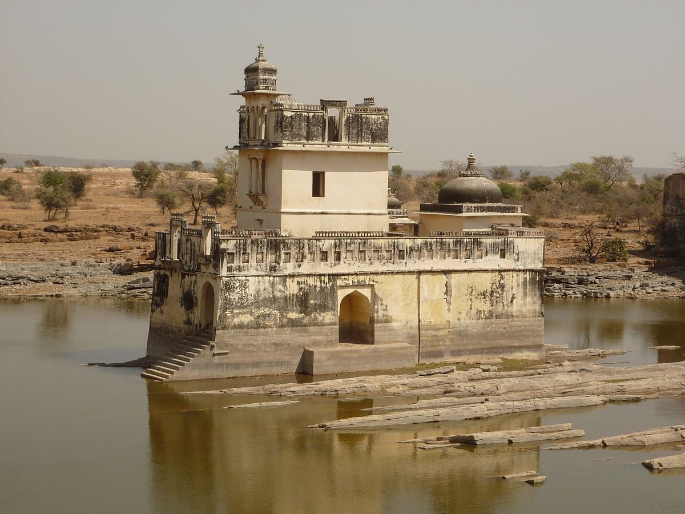
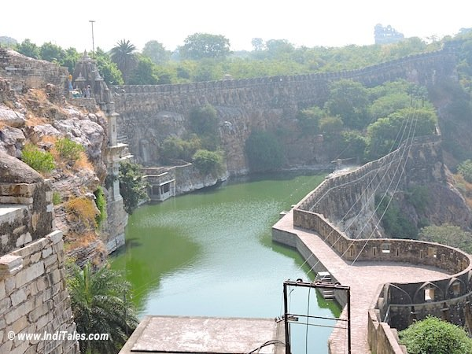

Located in South-Eastern Rajasthan, Chittorgarh is known for Chittorgarh Fort, the largest fort in India built on a hilltop, spreading over an area of around 700 acres. The capital of the erstwhile kingdom of Mewar, the magnificent fortress will always be remembered for the courageous self-sacrificing Jauhar performed by Rani Padmini to thwart the conquest of the fort by Alauddin Khilji.
Chittorgarh stands at the helm of Chattari Rajput pride and is remembered in the pages of history for its glorious battles, especially the siege of Alauddin Khilji. Once known for its grandeur and opulence, today, Chittorgarh has left its tales of bravery and betrayal far behind to catch up to commercialization. It takes a few hours to cover the fort complex on foot. Wear comfortable footwear and keep a water bottle handy.
Rana Kumbha Palace is the largest structure in Chittorgarh fort, and while it is now a mere tumbledown structure of broken walls and piles of stones, it was once a magnificent three-storied palace with gigantic pillars, maze-like underground tunnels and intricately designed architecture. The most famous attraction in Chittorgarh fort is the Padmini Palace, named after Queen Padmini herself. Replete with roof pavilions and water moats, the story of Queen Padmini’s valour rings out loud in every corner of this dilapidated building.